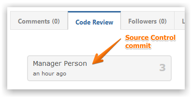
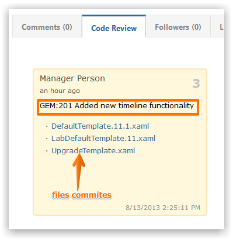
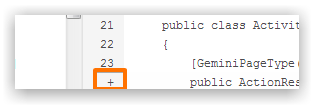
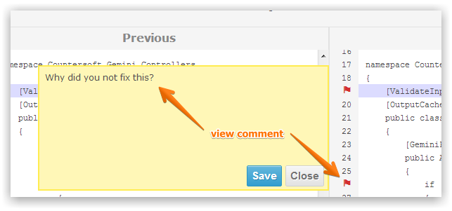

The Saucery app for Gemini provides Code Review capabilities for the following Source Control systems.
Associated file commits from Source control systems are displayed when viewing an item.

Expanding a commit details the commit comment and the files that were committed.

Clicking on a file brings details all the changes made. The previous and the new file are shown side-by-side with color-coded change highlights.
You can attach comments against individual line numbers.

You can view comments against individual line numbers by clicking the Red Flag icon.
